Administration
These pages configure AI LOTO application accounts and system behavior. BioStar worker users are separate and are managed from the embedded BioStar User Management page.
1. User Management (LOTO web accounts)
Use this page for people who sign into the AI LOTO web application—such as administrators, operators and viewers. It is not the BioStar worker database.
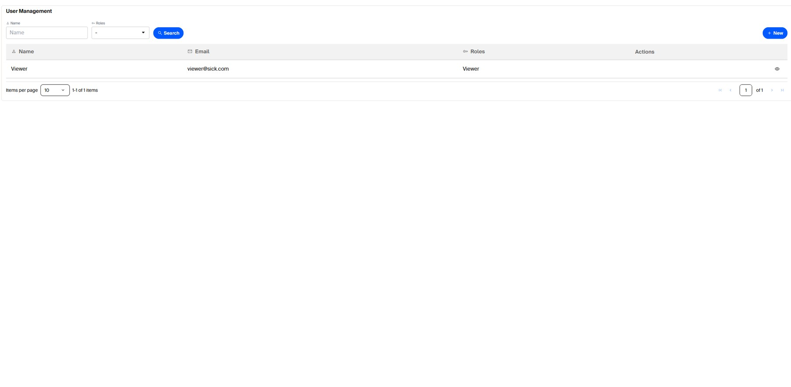
- Click New.
- Enter Name and Email.
- Select one or more Roles.
- For a new user, enter and confirm a password that meets the displayed password policy.
- Save. Existing users can be viewed, edited, have their password changed, or deleted when allowed.
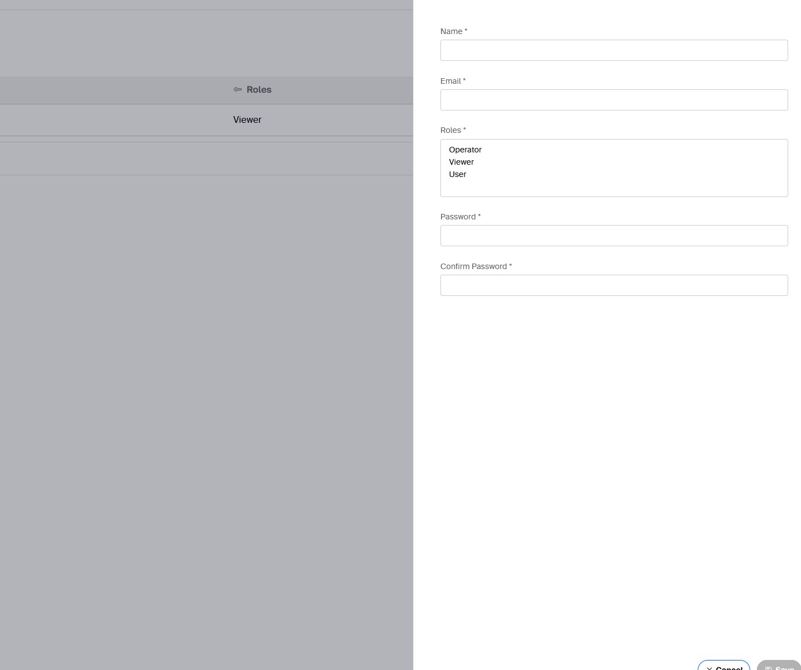
2. Roles & Permissions
The permission matrix shows which API actions each LOTO role can perform. Standard roles include Admin, Operator, Viewer and User.
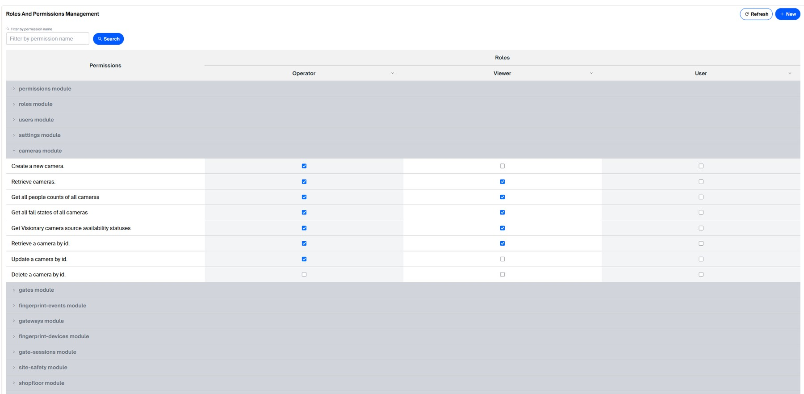
| Role | Default behavior |
|---|---|
| Admin | All application permissions. |
| Operator | All non-admin-only functions except DELETE. No Users/Roles/Permissions/BioStar admin endpoints. |
| Viewer | GET/read access to operational pages, plus the Gate Open and Gate Close commands. Basic Settings GET is also allowed. |
Admin-only subjects include LOTO Users, Roles, Permissions and the embedded BioStar 2 management session.
3. Settings
Before commissioning, open Settings and review the three sections below: General Settings, BioStar2 Server, and Camera Settings. Adjust the values to match your site and click Save in each section after making changes.
3.1 General Settings
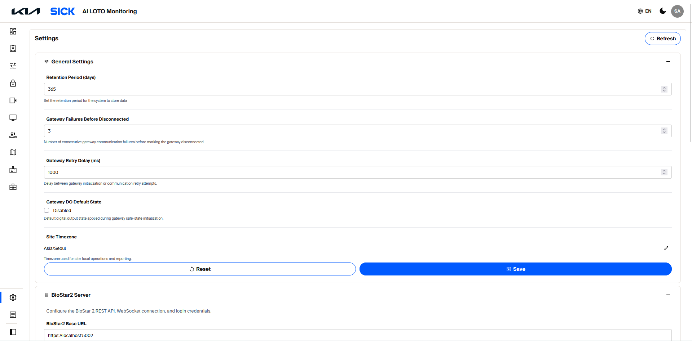
| Setting | Value example | What it controls |
|---|---|---|
| Retention Period (days) | 365 | How long the application keeps system data. |
| Gateway Failures Before Disconnected | 3 | Number of consecutive SIG300 communication failures before the gateway is marked disconnected. |
| Gateway Retry Delay (ms) | 1000 | Time between SIG300 initialization or communication retry attempts. |
| Gateway DO Default State | Disabled / OFF | Default digital output state applied during gateway initialization. Confirm that this matches the approved site wiring and control design. |
| Site Timezone | Asia/Seoul | Timezone used for site-local operations and reporting. Select the timezone for the actual installation. |
3.2 BioStar2 Server
Enter the server addresses and credentials used to connect AI LOTO Monitoring to BioStar 2.
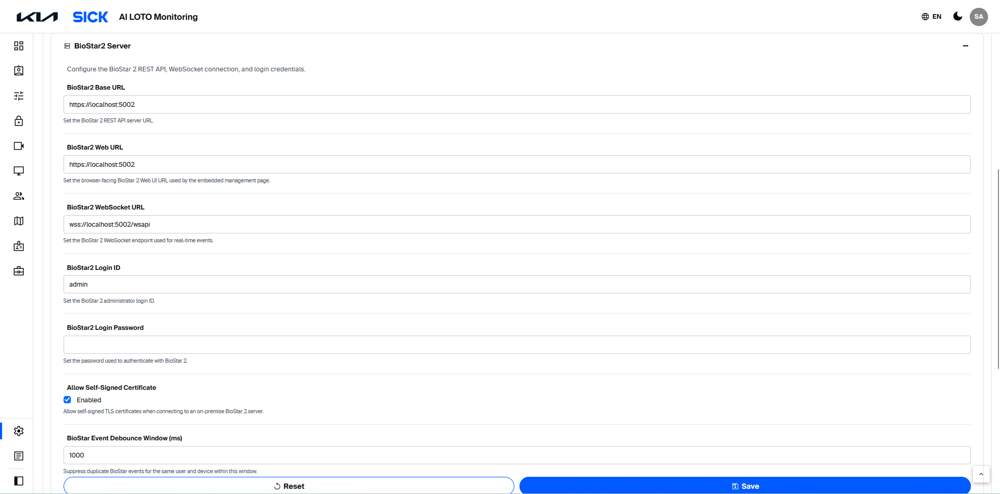
| Setting | Value example | What it controls |
|---|---|---|
| BioStar2 Base URL | https://localhost:5002 | Address used by the backend to access the BioStar 2 REST API. |
| BioStar2 Web URL | https://localhost:5002 | BioStar 2 Web UI address used for embedded management. |
| BioStar2 WebSocket URL | wss://localhost:5002/wsapi | Connection for receiving real-time authentication events. |
| BioStar2 Login ID | BioStar 2 account used for server authentication. | |
| BioStar2 Login Password | Password for the configured BioStar 2 account. | |
| Allow Self-Signed Certificate | Permits backend TLS connections to the on-premise BioStar server when a self-signed certificate is approved for this deployment. | |
| BioStar Event Debounce Window (ms) | 1000 | Suppresses duplicate successful authentication events from the same user and device within the specified time. |
3.3 Camera Settings
Configure how often Visionary cameras are polled and how long fall-detection conditions must persist before an alarm is activated or cleared.
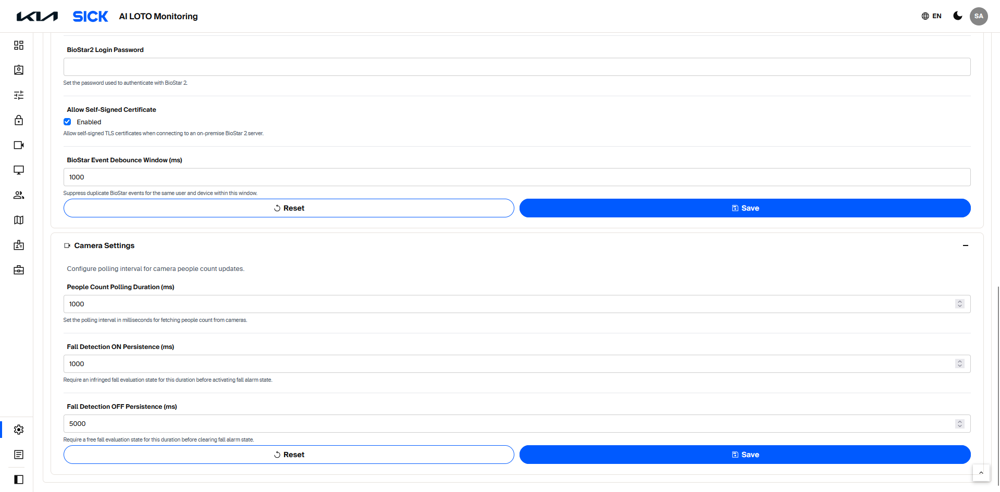
| Setting | Value example | What it controls |
|---|---|---|
| People Count Polling Duration (ms) | 1000 | How often the system requests people-count information from the Visionary cameras. |
| Fall Detection ON Persistence (ms) | 1000 | How long a fall evaluation must remain infringed before the system activates the fall alarm. |
| Fall Detection OFF Persistence (ms) | 5000 | How long the fall evaluation must remain clear before the system clears the fall alarm. |
4. Log Viewer
Use Log Viewer when a device action does not behave as expected. You can filter/search logs, select a level, use a date/time range, refresh, start/stop live streaming and download logs for support.
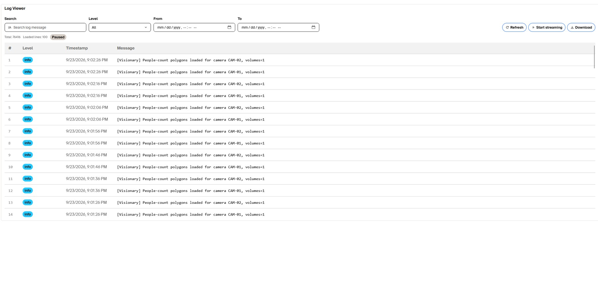
5. Theme, language and About
The application header provides:
- Language switch — changes supported UI language.
- Theme switch — toggles light/dark mode. Runtime logic is unchanged.
- User menu / About — shows application information/version and Logout.
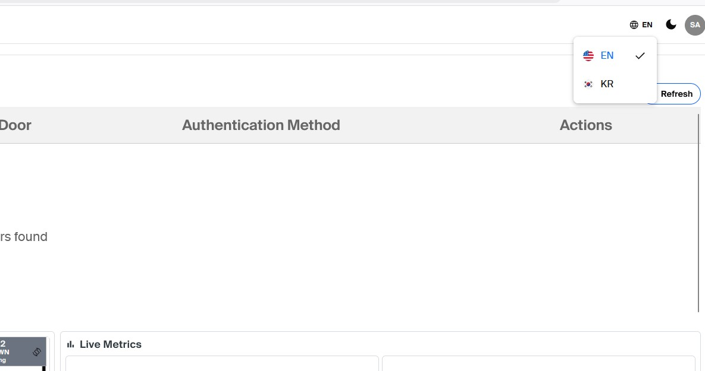
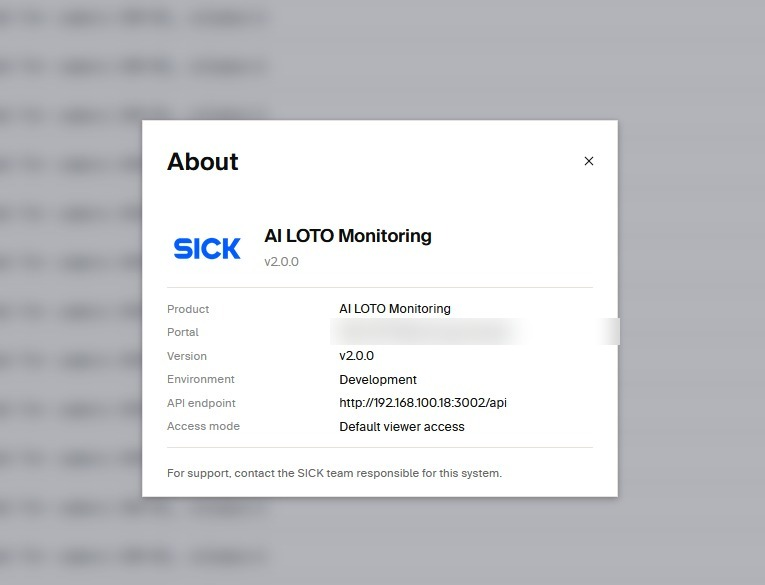
6. Viewer page behavior
Viewer accounts retain operational visibility without configuration controls. On Gateway, Gate, Camera and Access Device pages, create/edit/delete controls are hidden. Viewer can still open Details. Gate Open/Close remains available by default.
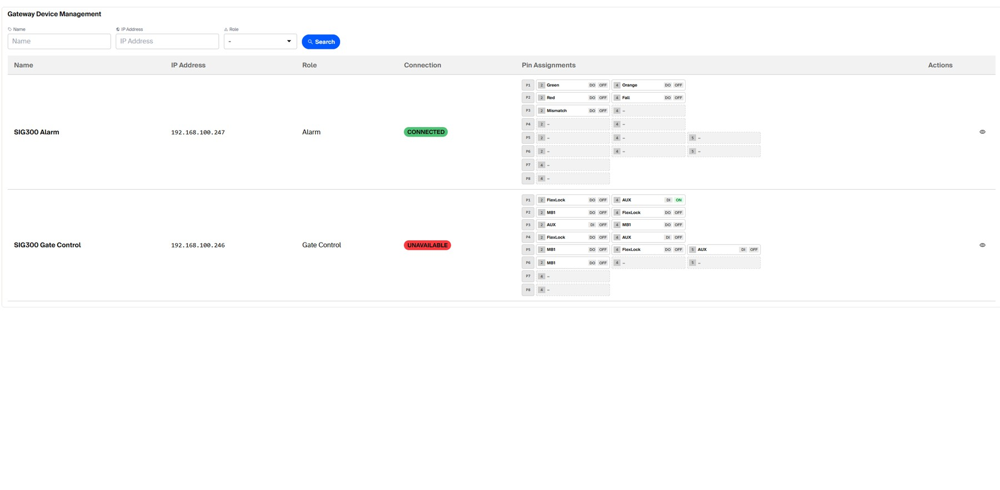
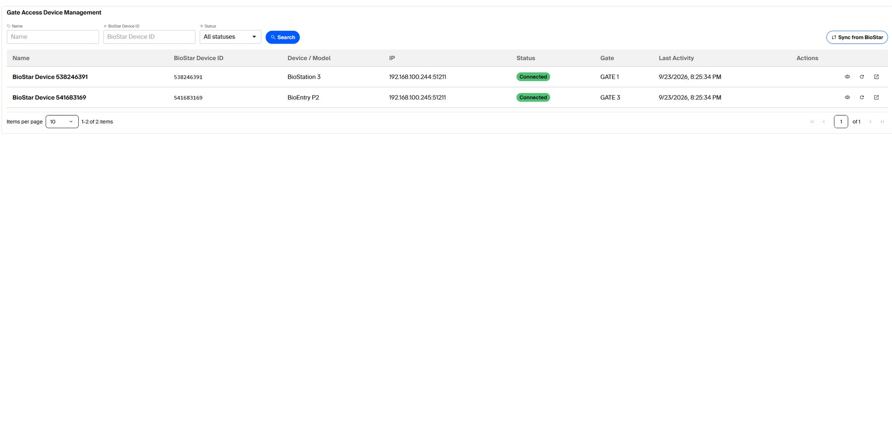
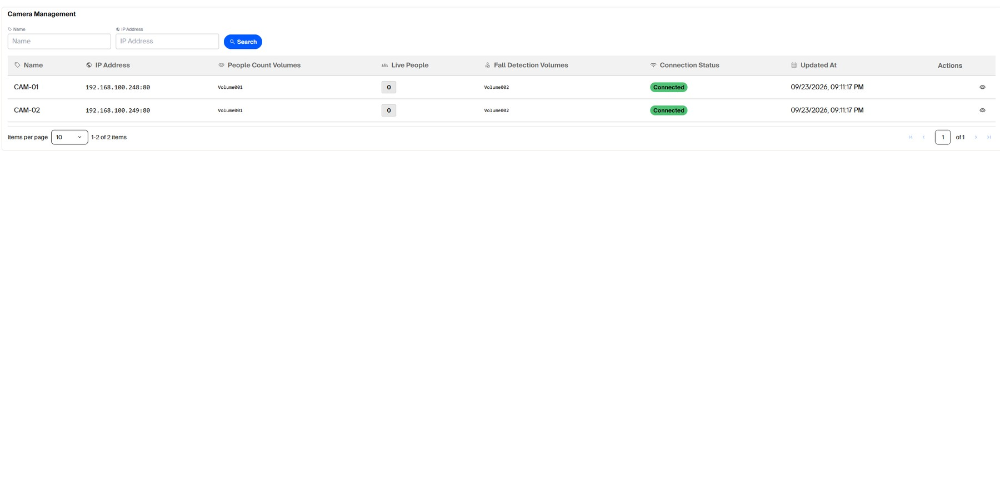
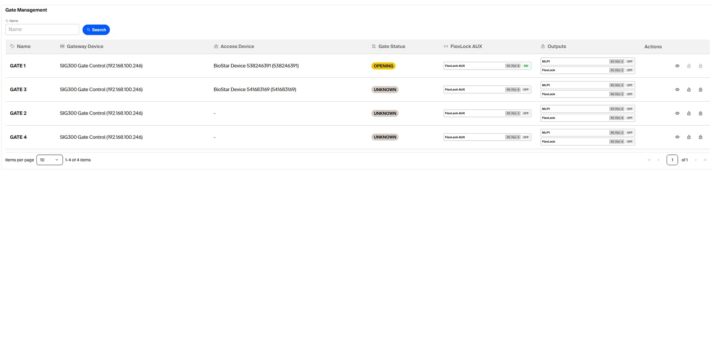